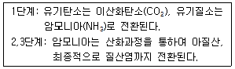
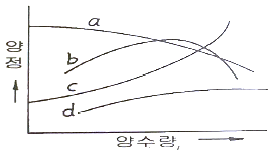
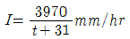
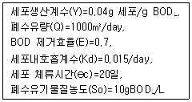
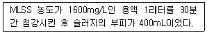
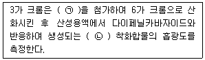
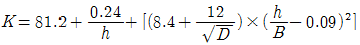
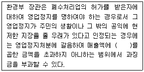
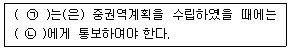

수질환경기사 (2021-05-15 기출문제)
1과목: 수질오염개론
1. 자당(sucrose, C12H22O111)이 완전히 산화될 때 이론적인 ThOD/TOC 비는?
- 2.67
- 3.83
- 4.43
- 5.68
(정답률: 77%)

2. 하천의 수질관리를 위하여 1920년대 초에 개발된 수질예측모델로 BOD와 DO반응 즉 유기물 분해로 인한 DO소비와 대기로부터 수면을 통해 산소가 재공급되는 재폭기만 고려한 것은?
- DO SAG I 모델
- QUAL-I 모델
- WQRRS 모델
- Streeter-Phelps 모델
(정답률: 71%)
3. 해양오염에 관한 설명으로 가장 거리가 먼 것은?
- 육지와 인접해 있는 대륙붕은 오염되기 쉽다.
- 유류오염은 산소의 전달을 억제한다.
- 원유가 바다에 유입되면 해면에 엷은 막을 형성하며 분산된다.
- 해수 중에서 오염물질의 확산은 일반적으로 수직방향이 수평방향보다 더 빠르게 진행된다.
(정답률: 80%)
4. 유기화합물이 무기화합물과 다른 점을 올바르게 설명한 것은?
- 유기화합물들은 대체로 이온반응보다는 분자반응을 하므로 반응속도가 느리다.
- 유기화합물들은 대체로 분자반응보다는 이온반응을 하므로 반응속도가 느리다.
- 유기화합물들은 대체로 이온반응보다는 분자반응을 하므로 반응속도가 빠르다.
- 유기화합물들은 대체로 분자반응보다는 이온반응을 하므로 반응속도가 빠르다.
(정답률: 77%)
5. 약산인 0.01N-CH3COOH가 18%해리될 때 수용액의 pH는?
- 약 2.15
- 약 2.25
- 약 2.45
- 약 2.75
(정답률: 60%)
6. 식물과 조류세포의 엽록체에서 광합성의 명반응과 암반응을 담당하는 곳은?
- 틸라코이드와 스트로마
- 스트로마와 그라나
- 그라나와 내막
- 내막과 외막
(정답률: 74%)
7. 호소의 영양상태를 평가하기 위한 Carlson 지수를 산정하기 위해 요구되는 인자가 아닌 것은?
- Chlorophyll-a
- SS
- 투명도
- T-P
(정답률: 64%)
8. 25℃, 2기압의 메탄가스 40kg을 저장하는데 필요한 탱크의 부피(m3)는? (단, 이상기체의 법칙, R=0.082Lㆍatm/molㆍK)
- 20.6
- 25.3
- 30.5
- 35.3
(정답률: 70%)
9. 광합성의 영향인자와 가장 거리가 먼 것은?
- 빛의 강도
- 빛의 파장
- 온도
- O2 농도
(정답률: 62%)
10. 황조류로 엽록소 a, c와 크산토필의 색소를 가지고 있고 세포벽이 형태상 독특한 단세포 조류이며, 찬물 속에서도 잘 자라 북극지방에서나 겨울철에 번성하는 것은?
- 녹조류
- 갈조류
- 규조류
- 쌍편모조류
(정답률: 68%)
11. 물의 특성에 관한 설명으로 틀린 것은?
- 수소와 산소의 공유결합 및 수소결합으로 되어 있다.
- 수온이 감소하면 물의 점성도가 감소한다.
- 물의 점성도는 표준상태에서 대기의 대략 100배 정도이다.
- 물분자 사이의 수소결합으로 큰 표면장력을 갖는다.
(정답률: 81%)
12. 자연계 내에서 질소를 고정할 수 있는 생물과 가장 거리가 먼 것은?
- Blue green algae
- Rhizobium
- Azotobacter
- Flagellates
(정답률: 54%)
13. 시료의 대장균수가 5000개/mL라면 대장균수가 20개/mL될 때까지의 소요시간(hr)은? (단, 일차반응기준, 대장균 수의 반감기=2시간)
- 약 16
- 약 18
- 약 20
- 약 22
(정답률: 67%)
14. 보통 농업용수의 수질평가 시 SAR로 정의하는데 이에 대한 설명으로 틀린 것은?
- SAR값이 20정도이면 Na+가 토양에 미치는 영향이 적다.
- SAR의 값은 Na+, Ca2+, Mg+2 농도와 관계가 있다.
- 경수가 연수보다 토양에 더 좋은 영향을 미친다고 볼 수 있다.
- SAR의 계산식에 사용되는 이온의 농도는 meq/L를 사용한다.
(정답률: 78%)
15. 분뇨에 관한 설명으로 옳지 않은 것은?
- 분뇨는 다량의 유기물과 대장균을 포함하고 있다.
- 도시하수에 비하여 고형물 함유도와 점도가 높다.
- 분과 뇨의 혼합비는 1:10이다.
- 분과 뇨의 고형물비는 약 1:1이다.
(정답률: 77%)
16. 호소의 조류생산 잠재력조사(AGP 시험)를 적용한 대표적 응용사례와 가장 거리가 먼 것은?
- 제한 영양염의 추정
- 조류 증식에 대한 저해물질의 유무추정
- 1차 생산량 측정
- 방류수역의 부영양화에 미치는 배수의 영향평가
(정답률: 54%)
17. 3mol의 글리신(glycine, CH2(NH2)COOH)이 분해되는데 필요한 이론적 산소요구량(gO2)은?

- 317
- 336
- 362
- 392
(정답률: 44%)
18. 1차 반응식이 적용될 때 완전혼합반응기(CFSTR) 체류시간은 압출형반응기(PFR)체류시간의 몇 배가 되는가? (단, 1차 반응에 의해 초기농도의 70%가 감소되었고, 자연대수로 계산하며 속도상수는 같다고 가정함)
- 1.34
- 1.51
- 1.72
- 1.94
(정답률: 35%)
19. 해수에 관한 다음의 설명 중 옳은 것은?
- 해수의 중요한 화학적 성분 7가지는 Cl-, Na+, Mg2+, SO42-, HCO3-, K+, Ca2+이다.
- 염분은 적도해역에서 낮고 남북 양극해역에서 높다.
- 해수의 Mg/Ca비는 담수보다 작다.
- 해수의 밀도는 수심이 깊을수록 염농도가 감소함에 따라 작아진다.
(정답률: 72%)
20. 아세트산(CH3COOH) 120mg/L 용액의 pH는? (단, 아세트산 Ka=1.8×10-5)
- 4.65
- 4.21
- 3.72
- 3.52
(정답률: 58%)
2과목: 상하수도계획
21. 상수시설 중 도수거에서의 최소유속(m/sec)은?
- 0.1
- 0.3
- 0.5
- 1.0
(정답률: 72%)
22. 슬러지탈수 방법 중 가압식 벨트프레스 탈수기에 관한 내용으로 옳지 않은 것은? (단, 월심탈수기와 비교)
- 소음이 적다.
- 동력이 적다.
- 부대장치가 적다.
- 소모품이 적다.
(정답률: 71%)
23. 응집지(정수시설)내 급속혼화시설의 급속혼화방식과 가장 거리가 먼 것은?
- 공기식
- 수류식
- 기계식
- 펌프 확산에 의한 방법
(정답률: 58%)
24. 하수 고도처리를 위한 급속여과법에 관한 설명과 가장 거리가 먼 것은?
- 여층의 운동방식에 의해 고정상형 및 이동상형으로 나눌 수 있다.
- 여층의 구성은 유입수와 여과수의 수질, 역세척 주기 및 여과면적을 고려하여 정한다.
- 여과속도는 유입수와 여과수의 수질, SS의 포획능력 및 여과지속시간을 고려하여 정한다.
- 여재는 종류, 공극률, 비표면적, 균등계수 등을 고려하여 정한다.
(정답률: 43%)
25. 상수의 취수시설에 관한 설명 중 틀린 것은?
- 최수탑은 탑의 설치 위치에서 갈수 수심이 최소 2m이상이어야 한다.
- 취수보의 취수구의 유입 유속은 1m/sec이상이 표준이다.
- 취수탑의 취수구 단면형상은 장방형 또는 원형으로 한다.
- 취수문을 통한 유입속도가 0.8m/sec 이하가 되도록 취수문의 크기를 정한다.
(정답률: 46%)
26. 상수처리시설인 침사지의 구조 기준으로 틀린 것은?
- 표면부하율은 200~500mm/min을 표준으로 한다.
- 지내 평균유속은 30cm/sec를 표준으로 한다.
- 지의 상단높이는 고수위보다 0.6~1m의 여유고를 둔다.
- 지의 유효수심은 3~4m를 표준으로 한다.
(정답률: 60%)
27. 복류수나 자유수면을 갖는 지하수를 취수하는 시설인 집수매거에 관한 설명으로 틀린 것은?
- 집수매거의 길이는 시험우물 등에 의한 양수시험 결과에 따라 정한다.
- 집수매거의 매설깊이는 1.0m 이하로 한다.
- 집수매거는 수평 또는 흐름방향으로 향하여 완경사로 하고 집수매거의 유츨단에서 매거내의 평균유속은 1.0m/sec 이하로 한다.
- 세굴의 우려가 있는 제외지에 설치할 경우에는 철근콘크리트틀 등으로 방호한다.
(정답률: 65%)
28. 계획오수량에 대한 설명 중 올바르지 않은 겄은?
- 합류식에서 우천 시 계획오수량은 원칙적으로 계획시간최대오수량의 3배이상으로 한다.
- 계획1일최대오수량은 1인1일평균오수량에 계획인구를 곱한 후, 여기에 공장폐수량, 지하수량 및 기타 배수량을 더한 것으로 한다.
- 계획1일평균오수량은 계획1일최대오수량의 70~80%를 표준으로 한다.
- 계획시간최대오수량은 계획1일 최대오수량의 1시간당 수량의 1.3~1.8배를 표준으로 한다.
(정답률: 56%)
29. 도시의 장래하수량 추정을 위해 인구증가 현황을 조사한 결과 매년 증가율이 5%로 나타났다. 이 도시의 20년 후의 추정 인구(명)는? (단, 현재의 인구는 73,000명이다.)
- 약 132,000
- 약 162,000
- 약 183,000
- 약 194,000
(정답률: 64%)
30. 해수담수화를 위해 해수를 취수할 때 취수위치에 따른 장ㆍ단점으로 틀린 것은?
- 해중취수(10m 이상): 기상변화, 해조류의 영향이 적다.
- 해안취수(10m 이내): 계절별 수질, 수온 변화가 심하다.
- 염지하수 취수: 추가적 전처리 비용이 발생한다.
- 해안치수(10m 이내): 양적으로 가장 경제적이다.
(정답률: 50%)
31. 펌프의 캐비테이션이 발생하는 것을 방지하기 위한 대책으로 볼 수 없는 것은?
- 펌프의 설치위치를 가능한 한 높게 하여 펌프의 필요유효흡입수두를 작게 한다.
- 펌프의 회전속도를 낮게 선정하여 펌프의 필요유효흡입수두를 작게 한다.
- 흡입관의 손실을 가능한 한 작게 하여 펌프의 가용유효흡입수두를 크게 한다.
- 흡입측 밸브를 완전히 개방하고 펌프를 운전한다.
(정답률: 66%)
32. 정수장에서 송수를 받아 해당 배수구역으로 배수하기 위한 배수지에 대한 설명(기준)으로 틀린 것은?
- 유효용량은 시간변동조정용량과 비상대처용량을 합한다.
- 유효용량은 급수구역의 계획1일최대 급수량의 6시간분 이상을 표준으로 한다.
- 배수지의 유효수심은 3~6m 정도를 표준으로 한다.
- 고수위로부터 정수지 상부 슬래브까지는 30cm 이상의 여유고를 둔다.
(정답률: 71%)
33. 오수관거를 계획할 때 고려할 사항으로 맞지 않는 것은?
- 분류식과 합류식이 공존하는 경우에는 원칙적으로 양 지역의 관거는 분리하여 계획한다.
- 관거는 원칙적으로 암거로 하며, 수밀한 구조로 하여야 한다.
- 관거단면, 형상 및 경사는 관거 내에 침전물이 퇴적하지 않도록 적당한 유속을 확보한다.
- 관거의 역사이펀이 발생하도록 계획한다.
(정답률: 76%)
34. 펌프의 특성곡선에서 펌프의 양수량과 양정간의 관계를 가장 잘 나타낸 곡선은?

- a 곡선
- b 곡선
- c 곡선
- d 곡선
(정답률: 60%)
35. 강우강도

, 유역면적 3.0km2, 유입시간 180sec, 관거길이 1km, 유출계수 1.1, 하수관의 유속 33m/min일 경우 우수유출량(m3/sec)은? (단, 합리식 적용)- 약 29
- 약 33
- 약 48
- 약 57
(정답률: 56%)
36. 하수도계획 수립 시 포함되어야 하는 사항과 가장 거리가 먼 것은/
- 침수방지계획
- 슬러지 처리 및 자원화 계획
- 물관리 및 재이용계획
- 하수도 구축지역 계획
(정답률: 40%)
37. 정수시설인 완속여과지에 관한 내용으로 옳지 않은 것은?
- 주위벽 상단은 지반보다 60cm 이상 높여 여과지 내로 오염수나 토사 등의 유입을 방지한다.
- 여과속도는 4~5m/day를 표준으로 한다.
- 모래층의 두께는 70~90cm를 표준으로 한다.
- 여과면적은 계획정수량을 여과속도로 나누어 구한다.
(정답률: 49%)
38. 유출계수가 0.65인 1km2의 분수계에서 흘러내리는 우수의 양(m3/sec)은? (단, 강우강도=3mm/min, 합리식 적용)
- 1.3
- 6.5
- 21.7
- 32.5
(정답률: 60%)
39. 하수시설인 중력식침사지에 대한 설명 중 옳은 것은?
- 체류시간은 3~6분을 표준으로 한다.
- 수심은 유효수심에 모래퇴적부의 깊이를 더한 것으로 한다.
- 오수침사지의 표면부하율은 3600m3/m2-day정도로 한다.
- 우수침사지의 표면부하율은 1800m3/m2-day정도로 한다.
(정답률: 58%)
40. 펌프를 선정할 때 고려 사항으로 적당하지 않은 것은?
- 펌프를 최대효율점 부근에서 운전하도록 용량 및 대수를 결정한다.
- 펌프의 설치대수는 유지관리상 가능한 적게하고 동일용량의 것으로 한다.
- 펌프는 저용량일수록 효율이 높으므로 가능한 저용량으로 한다.
- 내부에서 막힘이 없고, 부식 및 마모가 적어야 한다.
(정답률: 74%)
3과목: 수질오염방지기술
41. 포기조에 공기를 0.6m3/m3(물)으로 공급할 때, 물 단위 부피당의 기포 표면적(m2/m3)은? (단, 기포의 평균 지름=0.25cm, 상승속도=18cm/sec로 균일, 물의 유량=30000m3/day, 포기조 안의 체류시간=15min, 포기조의 수심=2.8m)
- 24.9
- 35.2
- 43.6
- 49.3
(정답률: 22%)
42. 하수처리장에서 발생되는 슬러지를 혐기성 소화조에서 처리하는 도중 소화가스량이 급격하게 감소하였다. 소화가스의 발생량이 감소하는 원인에 대한 설명 중 틀린 것은?
- 유기산이 과도하게 축적되는 경우
- 적정온도범위가 유지되지 않거나 독성물질이 유입된 경우
- 알칼리도가 크게 낮아진 경우
- pH가 증가된 경우
(정답률: 54%)
43. 다음 조건과 같이 혐기성 반응을 시킬 때 세포생산량(kg 세포/day)은?

- 84
- 182
- 215
- 334
(정답률: 30%)
44. 응집과정 중 교반의 영향에 관한 설명으로 알맞지 않은 것은?
- 교반에 따른 응집효과는 입자의 농도가 높을수록 좋다.
- 교반에 따른 응집효과는 입자의 지름이 불균일할수록 좋다.
- 교반을 위한 동력은 응결지 부피와 비례한다.
- 교반을 위한 동력은 속도경사와 반비례한다.
(정답률: 56%)
45. 활성슬러지 포기조의 유효용적 1000m3, MLSS 농도 3000mg/L, MLVSS는 MLSS농도의 75%, 유입 하수 유량 4000m3/day, 합성계수(Y) 0.63mg MLVSS/mg BODremoved, 내생분해계수(k) 0.⑤day-1, 1차 침전조 유출수의 BOD 200mg/L, 포기조 유출수의 BOD 20mg/L일 때, 슬러지 생성량(kg/day)은?
- 301
- 321
- 341
- 361
(정답률: 39%)
46. 평균입도 3.2mm인 균일한 층 30cm에서의 Reynolds 수는? (단, 여과속도=160L/m2ㆍmin, 동점성계수=1.003×10-6m2/sec)
- 8.5
- 11.6
- 15.9
- 18.3
(정답률: 36%)
47. 농축조에 함수율 99%인 일차슬러지를 투입하여 함수율 96%의 농축슬러지를 얻었다. 농축 후의 슬러지량은 초기 일자 슬러지량의 몇 %로 감소하였는가? (단, 비중은 1.0 기준)
- 50
- 33
- 25
- 20
(정답률: 53%)
48. 하수처리에 관련된 침전현상(독립, 응집, 간섭, 압밀)의 종류 중 ‘간섭침전’에 관한 설명과 가장 거리가 먼 것은?
- 생물학적 처리시설과 함께 사용되는 2차 침전시설내에서 발생한다.
- 입자 간의 작용하는 힘에 의해 주변 입자들의 침전을 방해하는 중간 정도 농도의 부유액에서의 침전을 말한다.
- 입자 등은 서로 간의 간섭으로 상대적 위치를 변경시켜 전체 입자들이 한 개의 단위로 침전한다.
- 함께 침전하는 입자들의 상부에 고체와 액체의 경계면이 형성된다.
(정답률: 55%)
49. 농약을 제조하는 공장의 폐수 중에는 유기인이 함유되고 있는 경우가 많다. 이들은 처리하는데 가장 적당한 처리방법은?
- 활성탄 흡착
- 이온교환수지법
- 황산 알미늄으로 응집
- 염화철로 응집
(정답률: 52%)
50. 침전지내에서 기타의 모든 조건이 같다면 비중이 0.3인 입자에 비하여 0.8인 입자의 부상속도는 얼마나 되는가?
- 7/2배 늘어난다.
- 8/3배 늘어난다.
- 2/7로 줄어든다.
- 3/8로 줄어든다.
(정답률: 52%)
51. 생물학적 폐수처리공정에서 생물 반응조에 슬러지를 반송시키는 주된 이유는?
- 폐수처리에 필요한 미생물을 공급하기 위하여
- 폐수에 들어있는 독성물질을 중화시키기 위하여
- 활성슬러지가 자라는데 필요한 영양소를 공급하기 위하여
- 슬러지처리공정으로 들어가는 잉여슬러지의 양을 증가시키기 위하여
(정답률: 50%)
52. 연속회분식(SBR)의 운전단계에 관한 설명으로 틀린 것은?
- 주입: 주입단계 운전의 목적은 기질(원폐수 또는 1차 유출수)을 반응조에 주입하는 것이다.
- 주입: 주입단계는 총 cycle 시간의 약 25% 정도이다.
- 반응: 반응단계는 총 cycle 시간의 약 65% 정도이다.
- 침전: 연속흐름식 공정에 비하여 일반적으로 더 효율적이다.
(정답률: 60%)
53. 혐기성 소화조내의 pH가 낮아지는 원인이 아닌 것은?
- 유기물 과부하
- 과도한 교반
- 중금속 등 유해물질 유입
- 온도 저하
(정답률: 58%)
54. 일반적으로 염소계 산화제를 사용하여 무해한 물질로 산화분해시키는 처리방법을 사용하는 폐수의 종류는?
- 납을 함유한 폐수
- 시안을 함유한 폐수
- 유기인을 함유한 폐수
- 수은을 함유한 폐수
(정답률: 56%)
55. 처리유량이 200m3/hr이고 염소요구량이 9.5mg/L, 잔류염소 농도가 0.5mg/L일 때 하루에 주입되는 염소의 양(kg/day)은?
- 2
- 12
- 22
- 48
(정답률: 55%)
56. 상향류 혐기성 슬러지상(UASB)에 관한 설명으로 틀린 것은?
- 미생물 부착을 위한 여재를 이용하여 혐기성 미생물을 슬러지층으로 축적시켜 폐수를 처리하는 방식이다.
- 수리학적 체류시간을 작게 할 수 있어 반응조 용량이 축소된다.
- 폐수의 성상에 의하여 슬러지의 입상화가 크게 영향을 받는다.
- 고형물의 농도가 높을 경우 고형물 및 미생물이 유실될 우려가 있다.
(정답률: 29%)
57. 회전원판법(RBC)에서 근접 배치한 얇은 원형판들을 폐수가 흐르는 통에 몇 %정도가 잠기는 것(침적율)이 가장 적합한가?
- 20%
- 30%
- 40%
- 50%
(정답률: 59%)
58. 활성슬러지 포기조 용액을 사용한 실험값으로부터 얻은 결과에 대한 설명으로 가장 거리가 먼 것은?

- 최종침전지에서 스러지의 침강성이 양호하다.
- 슬러지 밀도지수(SDI)는 0.5이하이다.
- 슬러지 용량지수(SVI)는 200 이상이다.
- 실모양의 미생물이 많이 관찰된다.
(정답률: 45%)
59. 1000m3의 하수로부터 최초침전지에서 생성되는 스러지 양(m3)은? (단, 최초침전지 체류시간=2시간, 부유물질 제거효율=60%, 부유물질농도=220mg/L, 부유물질 분해 없음, 슬러지 비중=1.0, 슬러지 함수율=97%)
- 2.4
- 3.2
- 4.4
- 5.2
(정답률: 46%)
60. 급속교반 탱크에 유입되는 폐수를 6평날 터빈임펠러로 완전 혼합하고자 한다. 임펠러의 직경은 2.0m, 깊이 6.0m인 탱크의 바닥으로 부터 1.2m 높이에서 설치되었다. 수온 30℃에서 임펠러의 회전속도가 30rpm일 때 동력소비량(kW)은? (단, p=kpn3D5, 30℃ 액체의 밀도 995.7kg/m3, k=6.3)
- 약 115
- 약 86
- 약 54
- 약 25
(정답률: 26%)
4과목: 수질오염공정시험기준
61. 개수로 유량측정에 관한 설명으로 틀린 것은? (단, 수로의 구성, 재질, 단면의 형상, 기울기 등이 일정하지 않은 개수로의 경우)
- 수로는 될수록 직선적이며, 수면이 물결치지 않는 곳을 고른다.
- 10m를 측정구간으로 하여 2m마다 유수의 횡단면적을 측정하고, 산출평균 값을 구하여 유수의 평균 단면적으로 한다.
- 유속의 측정은 부표를 사용하여 100m 구간을 흐르는데 걸리는 시간을 스톱워치로 재며 이때 실측 유속을 표면 최대유속으로 한다.
- 총 평균 유속(m/s)은 [0.75×표면 최대유속(m/s)]으로 계산된다.
(정답률: 53%)
62. “정확히 취하여”라고 하는 것은 규정한 양의 액체를 무엇으로 눈금까지 취하는 것을 말하는가?
- 메스실린더
- 뷰렛
- 부피피펫
- 눈금 비이커
(정답률: 70%)
63. 자외선/가기선 흡광광도계의 구성 순서로 가장 적합한 것은?
- 광원부 – 파장선택부 – 시료부 - 측광부
- 광원부 – 파장선택부 – 단색화부 - 측광부
- 시료도입부 – 광원부 – 파장선택부 - 측광부
- 시료도입부 – 광원부 – 검출부 – 측광부
(정답률: 62%)
64. 부유물질 측정 시 간섭물질에 관한 설명으로 틀린 것은?
- 증발잔류물이 1000mg/L 이상인 경우의 해수, 공장폐수 등은 특별히 취급하지 않을 경우, 높은 부유물질 값을 나타낼 수 있다.
- 5mm금속망을 통과시킨 큰 입자들은 부유 물질 측정에 방해를 주지 않는다.
- 철 또는 칼슘이 높은 시료는 금속침전이 발생하며 부유물질 측정에 영향을 줄 수 있다.
- 유지 및 혼합되지 않는 유기물도 여과지에 남아 부유물질 측정값을 높게 할 수 있다.
(정답률: 62%)
65. 폐수 20mL를 취하여 산성과망간산칼류법으로 분석하였더니 0.0⑤M-KMnO4 용액의 적정량이 4mL이었다. 이 폐수의 COD(mg/L)는? (단, 공시험값=0mL, 0.0⑤M-KMnO4용액의 f=1.00)
- 16
- 40
- 60
- 80
(정답률: 46%)
66. 수질분석용 시료 채취 시 유의사항과 가장 거리가 먼 것은?
- 시료 채취 용기는 시료를 채우기 전에 깨끗한 물로 3회 이상 씻은 다음 사용한다.
- 유류 또는 부유물질 등이 함유된 시료는 시료의 균일성이 유지될 수 있도록 채취하여야 하며 침전물 등이 부상하여 혼입되어서는 안 된다.
- 용존가스, 환원성 물질, 휘발성유기화합물, 냄새, 유류 및 수소이온 등을 측정하는 시료는 시료용기에 가득 채워야 한다.
- 시료 채취량은 보통 3~5L 정도이어야 한다.
(정답률: 68%)
67. 기체크로마토그래피법으로 유기인계 농약성분인 다이아지논을 측정할 때 사용되는 검출기는?
- ECD
- FID
- FPD
- TCD
(정답률: 50%)
68. 시료 보존 시 반드시 유리병을 사용하여야 하는 측정 항목이 아닌 것은?
- 노말핵산추출물질
- 음이온계면활성제
- 유기인
- PCB
(정답률: 56%)
69. NO3-(질산성 질소) 0.1mg N/L의 표준원액을 만들려고 한다. KNO3 몇 mg을 달아 증류수에 녹여 1L로 제조하여야 하는가? (단, KNO3 분자량=101.1)
- 0.10
- 0.14
- 0.52
- 0.72
(정답률: 31%)
70. 노말헥산 추출물질의 정량한계(mg/L)는?
- 0.1
- 0.5
- 1.0
- 5.0
(정답률: 59%)
71. 식물성 플랑크톤을 현미경계수법으로 측정할 때 저배율 방법(200배율 이하) 적용에 관한 내용으로 틀린 것은?
- 세즈윅-라프터 중배율 이상에서도 관찰이 용이하여 미소 플랑크톤의 검경에 적절하다.
- 시료를 챔버에 채울 때 피펫은 입구가 넓은 것을 사용하는 것이 좋다.
- 계수 시 스트립을 이용할 경우, 양쪽 경계면에 걸린 개체는 하나의 경계면에 대해서만 계수한다.
- 계수 시 격자의 경우 격자 경계면에 걸린 개체는 4면 중 2면에 걸린 개체는 계수하고 나머지 2면에 들어온 개체는 계수하지 않는다.
(정답률: 42%)
72. 수질오염공정시험기준상 음이온 계면활성제 실험방법으로 옳은 것은?
- 자외선/가시선 분광법
- 원자흡수분광광도법
- 기체크로마토그래피법
- 이온전극법
(정답률: 41%)
73. 공정시험기준의 내용으로 가장 거리가 먼 것은?
- 온수는 60~70℃, 냉수는 15℃이하를 말한다.
- 방울수는 20℃에서 정제수 20방울을 적하할 때, 그 부피가 약 1mL가 되는 것을 뜻한다.
- ‘정밀히 단다’라 함은 규정된 수치의 무게를 0.1mg까지 다는 것을 말한다.
- 시험에 쓰는 물은 따로 규정이 없는 한 증류수 또는 정제수로 한다.
(정답률: 62%)
74. 자외선/가시선 분광법을 적용한 크롬 측정에 관한 내용으로 ( )에 옳은 것은?

- ㉠ 과망간산칼륨, ㉡ 황색
- ㉠ 과망간산칼륨, ㉡ 적자색
- ㉠ 티오황산나트륨, ㉡ 적색
- ㉠ 티오황산나트륨, ㉡ 황갈색
(정답률: 54%)
75. 직각 3각 웨어에서 웨어의 수두 0.2m, 수로폭 0.5m, 수로의 밑면으로부터 절단 하부점 까지의 높이 0.9m일 때, 아래의 식을 이용하여 유량(m3/min)을 구하면?

- 1.0
- 1.5
- 2.0
- 2.5
(정답률: 49%)
76. 환원제인 FeSO4용액 25mL를 H2SO4 산성에서 0.1N-K2Cr2O7으로 산화시키는 데 31.25mL 소비되었다. FeSO4용액 200mL를 0.⑤N 용액으로 만들려고 할 때 가하는 물의 양(mL)은?
- 200
- 300
- 400
- 500
(정답률: 33%)
77. 시료의 최대보존기간이 다른 측정 항목은?
- 시안
- 불소
- 염소이온
- 노말헥산추출물질
(정답률: 46%)
78. 취급 또는 저장하는 동안에 이물질이 들어가거나 또는 내용물이 손실되지 아니하도록 보호하는 용기는?
- 밀봉용기
- 밀폐용기
- 기밀용기
- 압밀용기
(정답률: 63%)
79. 기체크로마토그래피법으로 PCB를 정량할 때 관련이 없는 것은?
- 전자포획형 검출기
- 석영가스 흡수 셀
- 실리카겔 칼럼
- 질소캐리어 가스
(정답률: 45%)
80. 알킬수은 화합물을 기체크로마토그래피에 따라 정량하는 방법에 관한 설명으로 가장 거리가 먼 것은?
- 전자포획형 검출기(ECD)를 사용한다.
- 알킬수은화합물을 벤젠으로 추출한다.
- 운반기체는 순도 99.999% 이상의 질소 또는 헬륨을 사용한다.
- 정량한계는 0.⑤mg/L이다.
(정답률: 46%)
5과목: 수질환경관계법규
81. 환경정책기본법령상 환경기준에서 하천의 생활환경기준에 포함되지 않는 검사항목은?
- TP
- TN
- DO
- TOC
(정답률: 45%)
82. 과징금에 관한 내용으로 ( )에 옳은 것은?

- 100분의 1
- 100분의 5
- 100분의 10
- 100분의 20
(정답률: 49%)
83. 배출부과금을 부과하는 경우, 당해 배출부과금 부과기준일 전 6개월 동안 방류수 수질기준을 초과하는 수질오염물질을 배출하지 아니한 사업자에 대하여 방류수 수질기준을 초과하지 아니하고 수질오염물질을 배출한 기간별로, 당해 부과 기간에 부과하는 기본배출부과금의 감면율은?
- 6개월 이상 1년 내 : 100분의 10
- 1년 이상 2년 내 : 100분의 30
- 2년 이상 3년 내 : 100분의 50
- 3년 이상 : 100분의 60
(정답률: 49%)
84. 폐수처리업의 허가를 받을 수 없는 결격사유에 해당하지 않는 것은?
- 폐수처리업의 허가가 취소된 후 2년이 지나지 아니한 자
- 파산선고를 받고 복권된 지 2년이 지나지 아니한 자
- 피성년후견인
- 피한정후견인
(정답률: 54%)
85. 수질오염방지시설 중 생물화학적 처리시설이 아닌 것은?
- 살균시설
- 접촉조
- 안정조
- 폭기시설
(정답률: 61%)
86. 사업장별 환경관리인의 자격기준으로 알맞지 않은 것은?
- 특정수질유해물질이 포함된 수질오염물질을 배출하는 제4종 또는 제5종사업장은 제4종사업장에 해당하는 환경관리인을 두어야 한다. 다만, 특정수질유해물질이 함유된 1일 20m3이하 폐수를 배출하는 경우에는 그러하지 아니한다.
- 방지시설 설치면제 대상인 사업장과 배출시설에서 배출되는 수질오염물질 등을 공동방지시설에서 처리하게 하는 사업장은 제4종사업장ㆍ제5종사업장에 해당하는 환경기술인을 둘 수 있다.
- 공동방지시설의 경우에는 폐수배출량이 제4종 또는 제5종사업장의 규모에 해당하면 제3종사업장에 해당하는 환경기술인을 두어야 한다.
- 공공폐수처리시설에 폐수를 유입시켜 처리하는 제1종 또는 제2종사업장은 제3종사업장에 해당하는 환경기술인을, 제3종사업장은 제4종사업장ㆍ제5종사업장에 해당하는 환경기술인을 둘 수 있다.
(정답률: 39%)
87. 비점오염저감시설 중 장치형 시설이 아닌 것은?
- 생물학적 처리형 시설
- 응집ㆍ침전 처리형 시설
- 소용돌이형 시설
- 침투형 시설
(정답률: 55%)
88. 중점관리저수지의 지정기준으로 옳은 것은?
- 총저수용량이 1만세제곱 미터 이상인 저수지
- 총저수용량이 10만세제곱 미터 이상인 저수지
- 총저수용량이 1백만세제곱 미터 이상인 저수지
- 총저수용량이 1천만세제곱 미터 이상인 저수지
(정답률: 50%)
89. 사업장별부과계수는 알맞게 짝지은 것은?
- 1종사업장(10000m3/일 이상)-2.0
- 2종사업장-1.6
- 3종사업장-1.3
- 4종사업장-1.1
(정답률: 53%)
90. 환경부장관이 공공수역의 물환경을 관리ㆍ보전하기 위하여 대통령령으로 정하는 바에 따라 수립하는 국가 물환경관리기본계획의 수립 주기는?
- 매년
- 2년
- 3년
- 10년
(정답률: 61%)
91. 오염총량초과과징금의 납부통지는 부과 사유가 발생한 날부터 몇 일 이내에 하여야 하는가?
- 15
- 30
- 45
- 60
(정답률: 32%)
92. 청정지역에서 1일 폐수배출량이 1000m3이하로 배출하는 배출시설에 적용되는 배출 허용기준 중 생물화학적 산소요구량(mg/L)은? (단, 2020년 1월 1일부터 적용되는 기준)
- 30 이하
- 40 이하
- 50 이하
- 60 이하
(정답률: 37%)
93. 시장ㆍ군수ㆍ구청장(자치구의 구청장을 말한다.)이 낚시금지구역 또는 낚시제한구역을 지정하려는 경우 고려할 사항으로 거리가 먼 것은?
- 용수의 목적
- 오염원 현황
- 낚시터 인근에서의 쓰레기 발생 현황 및 처리 여건
- 계절별 낚시 인구의 현황
(정답률: 60%)
94. 배출시설의 설치를 제한할 수 있는 지역의 범위 기준으로 틀린 것은?
- 취수시설이 있는 지역
- 환경정책기본법 제38조에 따라 수질보전을 위해 지정ㆍ고시한 특별대책지역
- 수도법 제7조의2제1항에 따라 공장의 설립이 제한되는 지역
- 수질보전을 위해 지정ㆍ고시한 특별대책지역의 하류지역
(정답률: 50%)
95. 산업폐수의 배출규제에 관한 설명으로 옳은 것은?
- 폐수배출시설에서 배출되는 수질오염물질의 배출허용기준은 대통령이 정한다.
- EH 또는 인구 50만 이상의 시는 지역환경 기준을 유지하기가 곤란하다고 이정할 때에는 시ㆍ도지사가 특별배출허용기준을 정할 수 있다.
- 특별대책지역의 수질오염방지를 위해 필요하다고 인정할 때에는 엄격한 배출허용기준을 정할 수 있다.
- 시ㆍ도안에 설치되어 있는 폐수무방류 배출시설은 조례에 의해 배출허용기준을 적용한다.
(정답률: 47%)
96. 중권역 물환경관리계획에 관한 내용으로 ( )의 내용으로 옳은 것은?

- ㉠ 관계 시ㆍ도지사, ㉡ 지방환경관서의 장
- ㉠ 지방환경관서의 장, ㉡ 관계 시ㆍ도지사
- ㉠ 유역환경청장, ㉡ 지방환경관서의 장
- ㉠ 지방환경관서의 장, ㉡ 유역환경청장
(정답률: 39%)
97. 시ㆍ도지사가 오염총량관리기본계획의 승인을 받으려는 경우, 오염총량관리기본계획안에 첨부하여 환경부장관에게 제출하여야 하는 서류가 아닌 것은?
- 유역환경의 조사ㆍ분석 자료
- 오염원의 자연증감에 관한 분석 자료
- 오염총량관리 계획 목표에 관한 자료
- 오염부하량의 저감계획을 수립하는 데에 사용한 자료
(정답률: 31%)
98. 골프장의 잔디 및 수목 등에 맹ㆍ고독성 농약을 사용한 자에 대한 벌금 또는 과태료 부과 기준은?
- 3백만원 이하의 벌금
- 5백만원 이하의 벌금
- 3백만원 이하의 과태료 부과
- 1천만원 이하의 과태료 부과
(정답률: 52%)
99. 사업자 및 배출시설과 방지시설에 종사하는 자는 배출시설과 방지시설의 정상적인 운영, 관리를 위한 환경기술인의 업무를 방해하여서는 아니 되며, 그로 부터 업무수행에 필요한 요청을 받은 때에는 정당한 사유가 없으면 이에 따라야 한다. 이 규정을 위반하여 환경기술인의 업무를 방해하거나 환경기술인의 요청을 정당한 사유없이 거부한 자에 대한 벌칙기준은?
- 100만원 이하의 벌금
- 200만원 이하의 벌금
- 300만원 이하의 벌금
- 500만원 이하의 벌금
(정답률: 54%)
100. 위임업무 보고사항의 업무내용 중 보고횟수가 연 1회에 해당되는 것은?
- 환경기술인의 자격별ㆍ업종별 현황
- 폐수무방류배출시설의 설치허가(변경허가) 현황
- 골프장 맹ㆍ고독성 농약 사용 여부확인 결과
- 비점오염원의 설치신고 및 방지시설 설치 현황 및 행정처분 현황
(정답률: 55%)
ThOD = (12 × 32) + (22 × 16/2) = 384 + 176 = 560 mgO2/mg
자당의 분자량은 342.3 g/mol입니다. 따라서, TOC는 다음과 같이 계산할 수 있습니다.
TOC = (12 × 12.01) + (22 × 1.01) = 180.22 g/mol
따라서, 이론적인 ThOD/TOC 비는 다음과 같이 계산할 수 있습니다.
ThOD/TOC = (560 mgO2/mg) / (180.22 g/mol) × (1000 mg/g) = 2.67
따라서, 정답은 "2.67"입니다.